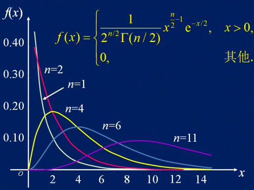
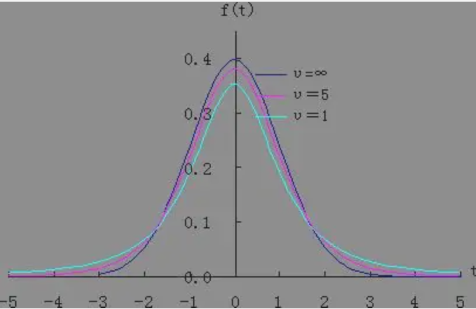
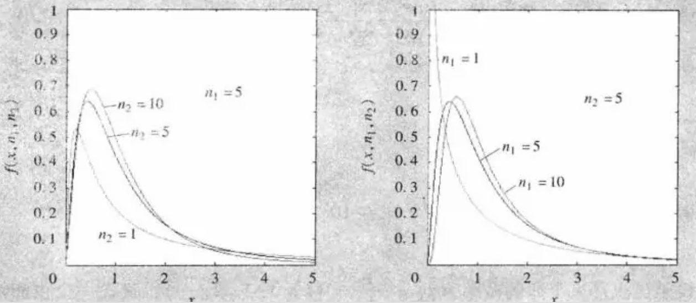

没有什么比年轻时代更感寂寞的了。——《こころ》
概率论
随机事件及其概率
随机事件及其运算
随机试验：
- 试验可在相同条件下重复进行。
- 试验的结果不止一个，且都明确可知。
- 每次试验之前，不知道哪个结果将会出现。
- 试验$E$中的每一个可能结果称为基本事件，或称为样本点，所有基本事件组成的集合称为试验$E$的样本空间，记为$\Omega$。
- 具有某种性质的样本点构成的集合称为试验$E$的随机事件，简称为事件。用大写字母表示。事件是样本空间的子集。
- 在随机试验中，事件A发生当且仅当A包含的某一样本点出现。
- 又样本空间中所有的样本点组成的事件称为必然事件，就用$\Omega$表示，而空集则为不可能事件。
事件的关系：包含、并、交、差、互不相容事件、对立事件都可以对应集合关系。
古典概型与几何概型
定义：设在相同的条件下，进行了n次试验，在这n次试验中事件A出现了m次，则称：
为随机事件A在n次试验中出现的频率，m称为频数。
- 经验表明，当试验次数相当大时，频率总是稳定于某一常数附近，以某一常数为中心作微小的摆动，这称为频率的稳定性。
定义：在大量重复试验中，若事件A发生的频率稳定在某一常数p附近摆动，则称改常数p为事件A发生的概率，记为$P(A)=p$。
- 注意n足够大，有$f_n(A)\approx P(A)$。
古典概型定义：设试验结果共有n个基本事件$\omega_1,…,\omega_n$，而且这些事件发生的可能性相等。事件A由其中的m个基本事件组成，则事件A的概率为：
- 注意古典概型要求了：
- 基本事件是有限可数的。
- 每次试验中，每个基本事件发生是等可能的。
几何概型定义：如果试验$E$的可能结果可以几何地表示为某区域$\Omega$中的一个点，并且点落在$\Omega$中某区域A的概率与A的测度成正比，而与A的形状无关。则随机点落在区域A的概率为：
其中$mA$表示A的测度。
概率的公理化定理及其性质
- 几何概型中，由于计算事件的概率需要几何图形的测度，因此不能把不可测集当作事件。于是我们可以递归定义事件集合。（即产生了全部的合法事件）
- $\Omega \in \mathscr{F} $
- 若$A\in\mathscr{F}$，则$\bar{A} \in \mathscr{F}$
- 若$A_n\in\mathscr{F},n=1,2,3,…$，则$\bigcup_{n=1}^{\infin}A_n\in\mathscr{F}$（其实这个要求结合上前两个也就可以证明集合对交封闭）
满足上述三个规定的子集称为$\sigma$域，或称$\sigma$代数，在概率论中我们称为事件域。
例：一维博雷尔域：一切形如$[a,b)$的有界左闭右开的开区间构成的集类产生的$\sigma$域。（注意并不是说博雷尔$\sigma$域中所有元素都是形如$[a,b)$的，而是说元素都是由$\{[a,b)|a,b\in R\}$和上面三条规则生成的）对博雷尔域，有：
- $\{x\}=\bigcap_{n=1}^\infin[x,x+\frac{1}{n})$
- $(x,y)=[x,y)- \{ x \}$
- $[x,y]=[x,y)+ \{ x \}$
- $(x,y]=[x,y)+ \{ y \}- \{ x \}$
因此，任何一维实数区间都是博雷尔域中的元素。
概率的公理化：对于样本空间的一个事件域，若对于事件域中的任何一个事件A，都有一个实数$P(A)$与之对应，并且满足：
非负性：$P(A)\geq 0$
规范性：$P(\Omega)\geq 0$
可列可加性：对于两两互不相容的可列个事件$A_1,…,A_n,…$，有
则称$P(A)$为事件A的概率。
显然概率有可列可加，可减，单调性等等。
- 上下连续性：若有$A_1\subset A_2\subset …\subset A_n\subset…$，则：若有$A_1\supset A_2\supset…\subset A_n\supset…$，则：
概率空间：三元组$(\Omega,\mathscr{F},P)$。
条件概率与事件独立性
- 事件A发生的前提下，事件B发生的概率称为条件概率，记为：$P(B|A)$。
设$(\Omega,\mathscr{F},P)$是一个概率空间，$A\in\mathscr{F}$，$P(A)>0$。则对任意$B\in\mathscr{F}$，记：
条件概率也满足：
- 非负性：$\forall B,P(B|A)\geq 0$
- 规范性：$P(\Omega|A)=1$
- 可列可加性：$P(\sum_{i=1}^\infin A_i|B)=\sum_{i=1}^\infin P(A_i|B)$
条件概率的乘法公式：
若对概率空间中的两个事件A，B，有：
则称事件A与事件B是相互独立。否则称他们不相互独立，或相依的。
- 定理：若事件A与B相互独立，则事件$\bar{A}$和$B$也是相互独立的。
对于三个事件$A,B,C$，若有：
则称它们两两独立。若有：
则称A, B, C相互独立。
- 相互独立可以推出两两独立，但两两独立无法推出相互独立。一般地，对于一个事件序列$A_1,…,A_n,…$，若其中任意有限个事件都相互独立，则称$A_1,…,A_n,…$是独立事件序列。
全概率公式与贝叶斯公式
定义：设$A_1,…,A_n$是一组事件，若它们两两互不相容，而且：
则称它们是样本空间的一个分割，亦称完备事件组。
全概率公式：对于$\Omega$的一个分割$A_1,…,A_n,P(A_i)>0$,有：
- 我愿称之为形式化的分类讨论。
贝叶斯公式：对于概率空间$(\Omega,\mathscr{F},P)$，$A_1,A_2,…,A_n$是样本空间的一个分割，则对任意$B\in\mathscr{F}$，$P(B)>0$，有：
- 我愿称之为展开的概率反演。$P(A|B)=P(AB)/P(B)=P(AB)/P(A)P(A)/P(B)=P(B|A)P(A)/P(B)$。
伯努利概型
若试验$E_1$的任一结果（事件）都与试验$E_2$的任一结果（事件）相互独立，则称这两个试验相互独立。若试验$E_1,…,E_n$相互独立，则称其为n重重复试验。
若试验$E_1$的可能结果只有$A$和$\bar{A}$，则称其为伯努利试验。若将$E_1$重复进行n次，且n次试验都相互独立，则称为n重伯努利试验。
- n重伯努利试验中，事件A发生k次的概率：
随机变量及其分布
随机变量与分布函数
定义：设$X(\omega)$是定义在概率空间$(\Omega,\mathscr{F},P)$上的单值实函数，即对每个$\omega\in\Omega$，都有$X(\omega)\in R$，并且对任意$x\in R$，$\{\omega|X(\omega)\leq x\}$都是随机事件（即其$\in\mathscr{F}$）则称$X(\omega)$是概率空间上的随机变量。通常简记为X。
- 分布函数：$X\sim F(x)=P(X\leq x)$。定理：
- 单调不减：$a<b\Rightarrow F(a)\leq F(b)$。
- $0\leq F(x)\leq 1,\lim_{n\rightarrow +\infin}F(x)=1,\lim_{n\rightarrow-\infin}F(x)=-1$。
- 右连续性：$F(x)$在任何点x处右连续。
- 用$\bigcap\{X\leq x+\frac{1}{n}\}=\{X\leq x\}$和右极限$=\lim_{n\rightarrow\infin}F(x+\frac{1}{n})$来证明。
- 随机变量有离散型，非离散型（连续型，奇异型）等等分类。
离散型随机变量及其分布
设离散型随机变量X的所有可能取得值为$x_1,…,x_n$，而X取$x_k$的概率为$p_k$，即$P(X=x_k)=p_k(k=1,…,n)$。
称上式为随机变量X的概率分布律。
常见分布：
退化分布：$P(X=C)=1$
两点分布：$P(X=0)=p,P(X=1)=1-p$
二项分布：$P(X=k)=C_n^kp^k(1-p)^{n-k}$
- 当$(n+1)p$为整数时，在$k=(n+1)p,(n+1)p-1$处概率取得最大值。若不为整数，则在$[(n+1)p]$取得最大值。于是$[(n+1)p]$称为二项分布$B(n,p)$的最可能出现次数，或称最可能值。
- $E[X]=np,D(X)=np(1-p)$
几何分布：$P(X=k)=(1-p)^{k-1}p$，记为$X\sim G(p)$。有$\sum_{i=1}^\infin P(X=k)=1$。
超几何分布：N件产品中有M件次品，现抽n件出来，其中的次品数服从超几何分布：
泊松定理：设随机变量$X_n\sim B(n,p_n),(n=1,2,…)$。若有$\lim_{n\rightarrow\infin}np_n=\lambda$，则有：
泊松分布：$X\sim P(\lambda)$：
自然界很多稀疏现象都服从泊松分布，故其又称为稀疏现象律。泊松分布最可能值为$\lambda,\lambda -1$或$[\lambda]$。
- $E[X]=\lambda,D(X)=\lambda$
连续型随机变量及其分布
定义：设随机变量X的概率分布函数为$F(x)$，如果存在一个函数$f(x)$，对于任意实数x，都有：
则称X为连续性随机变量，$f(x)$为X的概率密度函数。
连续型随机变量有：$P(X=a)=0,P(a\leq X\leq b)=P(a<X\leq b)=P(a\leq X<b)=P(a<X<b)$。
一个事件概率为零，他并不一定是不可能事件（空集）。同样，概率为1的也不一定是必然事件。
常见分布：
均匀分布：$X\sim U[a,b]$：
指数分布：$X\sim E(\lambda)$:
- 指数分布具有无记忆性：$P(X>s+t|X>s)=P(X>t)$。
$E[X]=\frac{1}{\lambda},D(X)=\frac{1}{\lambda^2}$
正态分布：$X\sim N(\mu,\sigma^2)$:
- 标准正态分布的概率函数和分布函数记为$\varphi(x),\Phi(x)$。有$\Phi(-x)=1-\Phi(x)$（关于y轴对称）。
- 3$\sigma$原则：正态分布几何全部的取值都落在$[\mu-3\sigma,\mu+3\sigma]$内。
随机变量函数的分布
定理：设连续型随机变量$X$具有概率密度函数$f_X(x)$，其可能的取值范围为$(a,b)$（可以到无穷）。则：
若函数$y=g(x)$在区间$(a,b)$上严格单调，其反函数$x=g^{-1}(y)$有连续的导函数，则$Y=g(X)$也是连续型随机变量，其概率密度函数为：
若函数$y=g(x)$在区间$(a,b)$中不重叠的区间$I_1,…,I_n$上逐段严格单调，其反函数$h_1(y),…,h_n(y)$在段内均有连续导函数，则Y也是连续型随机变量：
多维随机变量及其分布
二维随机变量及其分布
定义：设$(X,Y)$是二位随机变量，对任意实数$x,y$，二元函数$ F(x,y)=P(X\leq x,Y\leq y)$称为随机变量$(X,Y)$的联合分布函数。
- 特别地，如果二阶偏导数$f(x,y)$连续（即与求偏导顺序无关），则定义$f(x,y)=\frac{\partial^2F(x,y)}{\partial x\partial y}$为联合密度函数。
- 二维正态分布
- 二维均匀分布
边缘分布
记二维随机变量的分布函数$F(x,y)$关于$X$和$Y$的边缘分布函数为$F_X(x)=F(x,+\infin),F_Y(y)=F(+\infin,y)$。同样也有边缘概率密度函数：$f_X(x)=\int_{-\infin}^{+\infin}f(x,y)dy$。
- 二维正态分布的边缘分布仍为正态分布。
- 边缘分布的理解就是不论y取什么，只考虑x的取值情况。就像对多量子比特系统中，对单一比特进行测量之后引起的系统的坍塌。
条件分布
条件概率分布函数的定义为：$F_{Y|X}(y|x)=\frac{F(x,y)}{f_X(x)}=\int_{-\infin}^y\frac{f(x,v)dv}{f_X(x)}$，条件概率密度函数为$f_{Y|X}(y|x)=\frac{f(x,y)}{f_X(x)}$
随机变量的独立性
若对二维随机变量$(X,Y)$，有$\forall x,y.F(x,y)=F_X(x)F_Y(y)$或$f(x,y)=f_X(x)f_Y(y)$（两式等价），则称X与Y相互独立。
二维随机变量函数的分布
令$Z=g(X,Y)$，一般会先求$Z$的分布函数$F_Z(z)=\iint_{g(x,y)\leq z}f(x,y)dxdy$，然后再求导得到$f_Z(z)$。
- 若$Z=X+Y$，有$f_Z(z)=\int_{-\infin}^{+\infin}f(x,z-x)dx=\int_{-\infin}^{+\infin}f(z-y,y)dy$。（令$u=x+y$）概率密度函数卷积公式
- 若$Z=\frac{X}{Y}$，有$f_Z(z)=\int_{-\infin}^{+\infin}f(yz,y)|y|dy$。
- 若$Z=max(X,Y)$，有$F_Z(z)=F_X(z)F_Y(z)$。（若X，Y相互独立）
- 若$Z=min(X,Y)$，有$F_Z(z)=1-[1-F_X(z)][1-F_Y(z)]$。
随机变量的数字特征与极限定理
数学期望
设连续型随机变量$X$的概率密度函数为$f(x)$，若积分$\int_{-\infin}^{+\infin}xf(x)dx$绝对收敛，则称该积分值为X的数学期望。
若积分$\int_{-\infin}^{+\infin}g(x)f(x)dx$绝对收敛，则有：
对任意随机变量X，Y都有$E[X+Y]=E[X]+E[Y]$，但只有当它们独立时，才有$E[XY]=E[X]E[Y]$。
- 柯西-施瓦泽不等式：$(E[XY])^2\leq E[X^2]E[Y^2]$。
方差
设X是随机变量，如果$E[(X-E(X))^2]$存在，则称之为X的方差，记为$D(X)$。
- $D(X)=E[(X-E[X])^2]=E[X^2]-2E[X]E[X]+E[X]^2=E[X^2]-E[X]^2$。
协方差与相关系数
定义$Cov(X,Y)=E[(X-E[X])(Y-E[Y])]$称为随机变量$X$和$Y$的协方差，$\rho_{XY}=\frac{Cov(X,Y)}{\sqrt{D(X)}\sqrt{D(Y)}}$称为随机变量X和Y的相关系数。
- 常用计算协方差方法：$Cov(X,Y)=E[XY]-E[X][Y]$。
- 性质：
- $Cov(X,Y)=Cov(Y,X)$
- $Cov(a_1X+b_1,a_2Y+b_2)=a_1a_2Cov(X,Y)$
- $Cov(X_1+X_2,Y)=Cov(X_1,Y)+Cov(X_2,y)$
- $D(X\pm Y)=D(X)+D(Y)\pm 2Cov(X,Y)$
- $X,Y$独立$\Leftrightarrow Cov(X,Y)=0$
- $|\rho_{XY}|\leq 1$，且取等的充要条件是$X$和$Y$呈线性关系。
一般来说，$|\rho_{XY}|$越大，X和Y的“线性相关”越强，若$\rho_{XY}=0$，则它们独立。注意，当且仅当$\rho_{XY}=0$时称他们不相关。
$X$和$Y$独立$\Rightarrow Cov(X,Y)=0$，反之不一定成立。譬如$X\sim U[-1,1],Y=X^2$。
称$E[X^k]$为X的k阶原点矩。
称$E[(X-E[X])^2]$为X的k阶中心矩。
称$E[X^kY^l]$为X和Y的k+l阶混合矩。
称$E[(X-E[X])^k(Y-E[Y])^l]$为X和Y的k+l阶中心混合矩。
大数定律
切比雪夫不等式：
切比雪夫大数定律：
设随机变量$X_1,…,X_n,…$相互独立，且有相同的数学期望和方差，即：$E[X_k]\equiv \mu,D(X_k)\equiv \sigma^2$，则有：
辛钦大数定律：
设随机变量$X_1,…,X_n,…$独立同分布，且有相同的数学期望，即$E[X_k]\equiv\mu$，则：
它不要求方差的存在，但要求同分布。
伯努利大数定律：
在伯努利概型中（n次独立重复试验，k为事件A发生的次数，每次试验A发生的概率为p），有：
伯努利大数定律从理论上说明任一随机事件的频率具有稳定性。因此可以在大量试验后，将发生的频率近似作为概率。
中心极限定理
很多独立随机变量的极限分布是正态分布。
列维-林德伯格中心极限定理：
设$X_1,X_2,…,X_n,…$是独立同分布的随机变量：$E[X_k]\equiv \mu,D(X_k)\equiv\sigma^2$，则有：
即独立同分布的随机变量之和$\sum_{i=1}^nX_k$近似于正态分布$N(n\mu,n\sigma^2)$。所以$\frac{\bar{X}-\mu}{\sigma/\sqrt{n}}$近似服从$N(0,1)$。
蒂莫夫-拉普拉斯中心极限定理：
设$Y_n$服从二项分布$B(n,p)$，则有：
即n充分大时，二项分布近似于服从$N(np,np(1-p))$。
不同分布的中心极限定理：
设$X_1,…,X_n,…$是独立不同分布的随机变量，$D(X_i)=\sigma_i^2$。若：则：
服从正态分布。它表示，由足够多的随机变量，但每个随机变量又不起决定性作用，他们的平均随机变量服从正态分布。
数理统计
数理统计基本知识
总体与样本
从整体中抽取的待测的个体组成的集合称为样本。
简单随机样本需要满足：
独立性：$X_1,…,X_n$是相互独立的随机变量。
- 代表性：$X_1,…,X_n$要与总体$X$有相同的分布。
设$X_1,…,X_n$为来自总体$X$的简单随机样本，则有：
- $X_1,…,X_n$的联合分布函数为：$F_{X_1,…,X_n}(x_1,…,x_n)=\prod_{i=1}^n F(x_i)$，其中$F(x)$是总体$X$的分布函数。
- $E[X_i]\equiv E[X],D(X_i)\equiv D(X)$。
统计量与三大分布
不含任何未知参数，只关于样本的实值函数称为样本的一个统计量。常用统计量：
- 均值：$\bar{X}=\sum_{i=1}^nX_i$
- 样本方差：$S^2=\frac{1}{n-1}\sum_{i=1}^n(X_i-\bar{X})^2=\frac{1}{n-1}(\sum_{i=1}^nX_i^2-n\bar{X})$，这里为什么是除以$n-1$呢，是因为要保证标准差的无偏性，在后面“估计量的优劣评价”中会提到。
- 样本标准差：$S=\sqrt{S^2}$
- 样本k阶原点矩：$A_k=\frac{1}{n}\sum_{i=1}^nX_i^k$
样本k阶中心矩：$B_k=\frac{1}{n}\sum_{i=1}^n(X_i-\bar{X})^2$
顺序统计量：最小、最大统计量$max(X_1,…,X_n),min(X_1,…,X_n)$
二维统计量：
- 协方差：$S_{XY}^2=\frac{1}{n-1}\sum_{i=1}^n（X_i-\bar{X})(Y_i-\bar{Y})$
- 样本相关系数：$\rho_{XY} = \frac{S_{XY}^2}{S_X S_Y}$
三大分布：
$\chi^2$分布：
设随机变量$X_1,…,X_n$独立且都服从标准正态分布，则：
有$E[\chi^2(n)]=n,D[\chi^n(n)]=2n$。
$\chi^2(m)+\chi^2(n)=\chi^2(m+n)$。图像：

t分布（学生分布）：
设随机变量$X,Y$相互独立，且$X\sim N(0,1),Y\sim\chi^2(n)$，则：
有$E[t(n)]=0(n>1),D[t(n)]=\frac{n}{n-2}(n>2)$。
当$n\geq 30$时，已经可以将t分布近似看成标准正态分布。图像：

F分布：
设随机变量$X$和$Y$相互独立，且$X\sim\chi^2(m),Y\sim\chi^2(n)$，则：
有$E[F(m,n)]=\frac{n}{n-2},D[F(m,n)]=\frac{2n^2(m+n-2)}{m(n-2)^2(n-4)}$，且$F\sim F(m,n)\Rightarrow\frac{1}{F}\sim F(n,m)$。图图：

这些图一个比一个丑
上分位数点：$P(X>x_\alpha)=1-F(x_\alpha)=\alpha$，则$x_\alpha$称为X的上$\alpha$分位点。
- 正态分布的上分位点记为$u_\alpha$。
- $n\geq 40$时，$\chi^2_\alpha(n)\approx\frac{1}{2}(u_\alpha+\sqrt{2n-1})^2$
- 由t分布的对称性，有$t_{1-\alpha}(n)=-t_\alpha(n)$
- $F_{1-\alpha}(m,n)=\frac{1}{F_\alpha(n,m)}$
顺序统计量的分布：设总体X具有分布函数$F(x)$，其密度函数为$f(x)$。则：
- $X_{(1)}=min(X_1,…,X_n),f_{X_{(1)}}(x) = nf(x) [1-F(x)]^{ n-1 }$
- $X_{(n)}=max(X_1,…,X_n),f_{X_{(n)}}(x) = nf(x)[F(x)]^{ n-1 }$
- $f_{X_{(1)},X_{(n)}}(x,y)=n(n-1)f(x)f(y)[F(y)-F(x)]^{n-2}(x\leq y)$。
- $f_{X_{(k)}}(x)=kC_n^kF(x)^{k-1}[1-F(x)]^{n-k}f(x)$
☆正态总体的抽样分布
设$X_1,…,X_n$是来自正态总体$X\sim N(\mu,\sigma^2)$的一组样本，则：
- $\bar{X}\sim N(\mu,\frac{\sigma^2}{n})$
- $\frac{(n-1)S^2}{\sigma^2}\sim\chi^2(n-1)$
- $\frac{\bar{X}-\mu}{S/\sqrt{n}}\sim t(n-1)$
- $\bar{X}$与$S^2$相互独立
设$X_1,…,X_n$是来自正态总体$X\sim N(\mu_1,\sigma_1^2)$的一组样本，设$Y_1,…,Y_n$是来自正态总体$Y\sim N(\mu_2,\sigma_2^2)$的一组样本，且两组样本间独立。则：
- $\frac{S_X^2/\sigma_1^2}{S_Y^2/\sigma_2^2}\sim F(m-1,n-1)$
- 剩下两个分布太麻烦了
参数估计和假设检验
参数的点估计
参数估计是根据样本对总体未知参数（如均值，方差）等进行估计的一种统计推断方法。
- 参数点估计：构造一个统计量$\hat{\theta}=\hat{\theta}(X_1,…,X_n)$，直接用$\hat{\theta}$作为$\theta$的估计值。
矩估计
- 矩估计法是用样本的k阶原点矩作为总体的k阶原点矩$E[X^k]$的估计。
考虑要估计的参数是$\theta_1,…,\theta_m$，于是可以列出方程组：
然后可以解方程组得到一组解$(\hat{\theta_1},…,\hat{\theta_m})$，就可以作为参数$(\theta_1,…,\theta_m)$的估计。
根据大数定律，有：
所以样本的k阶原点矩就是总体的k阶原点矩的一个合理估计。
[例]：已知总体X的一组样本$X_1,X_2,…,X_n$，试估计总体的方差和均值。（假设它们存在）
列出方程组：
解得：
从例题中，可以看到，估计实际上就是把总体的参数用以样本为自变量的函数来表示，当我们获得了一组样本值时，我们就可以对总体进行合理猜测，这就是统计，用获得的一部分数据去估计整体。
最大似然估计
考虑我们有一组样本值$x_1,…,x_n$，于是事件$A=\{X_1=x_1,…,X_n=x_n\}$发生的概率是一个关于参数$\theta=(\theta_1,…,\theta_m)$的函数$L(\theta)$。我们希望取得$\theta$的一个最大似然估计$\hat{\theta}$，此时$L(\hat{\theta})$取得最大值。
$L(\theta)$的确定：
- 若总体是离散型的，则显然：$P(X_1=x_1,…,X_n=x_n)=\prod_{i=1}^nP(X_i=x_i)$，而$P(X_i=x_i)$是关于$\theta$的函数。
- 若总体是连续型的，则要求$L(\theta)=\prod_{i=1}^n \int_{x_i}^{x_i+dx_i}f(t)dt\approx\prod_{i=1}^nf(x_i)dx_i(dx_i\rightarrow 0)$，$f(x)$是概率密度函数。
$\hat{\theta}$的确定：
- 因为我们不关心$L(\theta)$的最大值，而只关心取得最大值时$\theta$的值。于是我们可以对$L(\theta)$取自然对数再求导（不影响极值点），这也可以证明：因为$dx_i$与$\theta$无关，因此连续型的最大似然估计也可以直接选为$L(\theta)=\prod_{i=1}^nf(x_i)$。
设$X\sim N(\mu,\sigma^2)$，已知$X$的一组样本观测值$x_1,…,x_n$，求$\mu,\sigma^2$的最大似然估计。
- 注意严格来说，最大似然估计是要知道样本的观测值的，当然也可以设成字母表示$a_1,…,a_n$。但用$X_1,…,X_n$来表示是不合理的。
估计量优劣的评价标准
通常用均方误差$MSE(\hat{\theta})=E[(\theta-\hat{\theta})^2]$来评价估计量的偏离程度。
其中，中间项为0是因为$E[\hat{\theta}-E[\hat{\theta}]]=E[\hat{\theta}]-E[\hat{\theta}]=0$。
式子中将$\hat{\theta}$作为随机变量，而把$\theta$作为已知常量。我的理解是，先给出一组样本$X_1,…,X_n$，然后这些样本都是和总体同分布的随机变量，此时可以进行点估计：$\hat{\theta}=f(X_1,…,X_n)$，所以可以对$\hat{\theta}$取期望。然后假如已知了参数$\theta$，此时我们可以$\hat{\theta}$成了未知量，因为样本没有被观测。然后我们可以计算出$\hat{\theta}$偏离已知的$\theta$的距离的平方的期望。
当$E[\hat{\theta}]-\theta=0$时，即$E[\hat{\theta}]=\theta$时，我们称估计量是无偏的。这是好满足的。
但$D(\hat{\theta})=0$是不可满足的，因为若$\hat{\theta}$是一个常数而与样本无关了，那显然不太合理。通常我们在无偏的估计中，选择方差最小的，也就是最有效的，称为最小无偏估计。
若$E[\hat{\theta}]=\theta$，则称$\hat{\theta}$是$\theta$的无偏估计，若$\lim_{n\rightarrow\infin}E[\hat{\theta}]=\theta$，则称$\hat{\theta}$是$\theta$的渐进无偏估计。否则就是有偏估计。
这里可以解释下之前留下的问题，为什么样本方差$S^2$中除以的是$n-1$。我们来证明：$E[S^2]=\sigma^2$，即$S^2$是$\sigma^2$的无偏估计。
而
因此$S^2$是$\sigma^2$的一个无偏估计。
事实上，样本均值和样本方差总是总体均值和总体方差的无偏估计。
若对任意的$\varepsilon>0$，有$\lim_{n\rightarrow \infin}P(|\theta-\hat{\theta_n}|\geq\varepsilon)=0$，则称$\hat{\theta}(X_1,…,X_n)$是$\theta$的一个相合（一致）估计。
- 若$\lim_{n\rightarrow\infin}E[\hat{\theta_n}]=\theta,\lim_{n\rightarrow\infin}D(\hat{\theta_n})=0$，则$\hat{\theta}_n$是$\theta$的一个相合估计。
参数的区间估计
设$\hat{\theta}_1,\hat{\theta}_2$是两个统计量，若$P(\hat{\theta}_1\leq \theta\leq\hat{\theta}_2)=1-\alpha$，则称随即区间$[\hat{\theta}_1,\hat{\theta}_2]$是$\theta$的一个区间估计或置信区间，$1-\alpha$称为置信水平或置信度。
- 一般来说，置信度越高，精确性（区间长度）越差（越长）。
求解置信区间的一般方法为：
- 找一个与要估计的参数$\theta$有关的统计量$T$，一般是$\theta$的一个良好的点估计$\hat{\theta}$。
- 设法找出$T$和$\theta$的某一函数$H(T,\theta)$，要求H的分布已知且与$T,\theta$无关，称为枢轴变量。
- 寻找合适的常数$c,d$使得$P(c\leq H\leq d)=1-\alpha$。
- 将$c\leq H\leq d$等价变形为$\hat{\theta}_1\leq\theta\leq\hat{\theta}_2$。
正态分布的置信区间：
| 评估参数 | 条件 | 枢轴变量及其分布 | 置信区间 |
|---|---|---|---|
| $\mu$ | $\sigma^2$已知 | $\frac{\bar{X}-\mu}{\sigma/\sqrt{n}}\sim N(0,1)$ | $[\bar{X}-u_{\alpha/2}\frac{\sigma}{\sqrt{n}},\bar{X}+u_{\alpha/2}\frac{\sigma}{\sqrt{n}}]$ |
| $\mu$ | $\sigma^2$未知 | $\frac{\bar{X}-\mu}{S/\sqrt{n}}\sim t(n-1)$ | $[\bar{X}-t_{\alpha/2}(n-1)\frac{S}{\sqrt{n}},\bar{X}+t_{\alpha/2}(n-1)\frac{S}{\sqrt{n}}]$ |
| $\sigma^2$ | $\mu$已知 | $\sum_{i=1}^n\frac{ X_i-\mu}{\sigma}^2\sim\chi^2(n)$ | $[\frac{\sum(X_i-\mu)^2}{\chi_{\alpha/2}^2(n)},\frac{\sum(X_i-\mu)^2}{\chi_{1-\alpha/2}^2(n)}]$ |
| $\sigma^2$ | $\mu$未知 | $\frac{(n-1)S^2}{\sigma^2}\sim\chi^2(n-1)$ | $[\frac{(n-1)S^2}{\chi_{\alpha/2}^2(n-1)},\frac{(n-1)S^2}{\chi_{1-\alpha/2}^2(n-1)}]$ |
假设检验
只对总体的某些未知参数作出假设，通过抽样来判断假设是否成立，这种检验称为参数检验。
只对未知分布函数的类型或者它的某些特性提出假设，然后对这种假设进行检验，被称为非参数检验。
参数检验的步骤——以对期望假设为例：
建立假设：
$H_0$称为原假设，$H_1$称为备择假设。
选取检验统计量（不能含未知参数）：
通过比较原假设成立时统计量的分布和备择假设成立时统计量的分布，得出对原假设不利的事件。若总体的方差已知，可以选择统计量：
$H_0$成立时，$U\sim N(0,1)$，$H_1$成立时，$U\sim N(\frac{\mu-5800}{\sigma/\sqrt{n}},1)$。所以我们可以选择对$H_0$不利的事件为$\{|U|>C\}$。若事件发生了，我们便拒绝$H_0$。
选取检验显著性水平$\alpha$与临界值，进而确定$H_0$的拒绝区域。
在我们总是倾向于“保护“原假设的。于是我们默认在原假设成立的前提下，若对$H_0$不利的事件还是发生了，就拒绝原假设：
若$\alpha=0.05$，则可以得出$P(|U|>C|H_0)=0.05\Rightarrow C=u_{0.025}$。因为$H_0$成立时，$U$是标准正态分布。
做判断：
根据样本的观测值，计算$U$，和$C$进行比较。若$|U|>C$就拒绝$H_1$。
这里对$P(|U|>C|H_0)=\alpha$我的理解是：若$H_0$成立的话，发生$|U|>C$的概率很小很小，所以现实中发生了的话我们只好认为$H_0$不成立了。
假设检验不一定原假设一定形如$a=a_0$，其本质是把参数$\theta$分成两个不相交的空间：
若$\Theta_1$在$\Theta_0$的两侧（如例子）就叫做双侧检验，否则也可以有$\Theta_1$在$\Theta_0$的右侧或左侧的单侧检验。
假设检验可能有两种错误，弃真和存伪
- 弃真：$H_0$成立，但拒绝事件$|U|>C$发生了，所以拒绝了$H_0$。弃真的概率就是显著性水平$\alpha$。
- 存伪：$H_1$成立，却接受了$H_0$。它的概率比较难以计算，记为$\beta$。
事实上，有当样本数$n$固定时，$\alpha$增大$\beta$就会减小，$\alpha$减小$\beta$就会增大。但增大样本数$n$可以使得$\alpha$和$\beta$都减小。（抽样的值多了更准确）
给出一个样本观测值$U$，能做出”拒绝$H_0$“的最小的$\alpha$值称为检验的p值。
- 一般模拟抽样的软件不仅会告诉你模拟抽取的样本观测值，同样也会告诉你该观测值下的p值。这样你就不需要去比较$U$和$u_{\alpha/2}$了，而只用比较$\alpha$和p。
正态总体参数的假设检验
| 条件 | 原假设$H_0$ | 备选假设$H_1$ | 检验统计量 | 拒绝域 | ||
|---|---|---|---|---|---|---|
| $\sigma^2=\sigma_0^2$已知 | $\mu=\mu_0$ | $\mu\neq\mu_0$ | $U=\frac{\bar{X}-\mu_0}{\sigma_0/\sqrt{n}}$ | $ | U | >u_{\alpha/2}$ |
| $\mu\leq\mu_0$ | $\mu>\mu_0$ | 服从正态分布 | $U>u_\alpha$ | |||
| $\mu \geq\mu_0$ | $\mu <\mu_0$ | $U<-u_\alpha$ | ||||
| $\sigma^2$未知 | $\mu=\mu_0$ | $\mu\neq\mu_0$ | $T=\frac{\bar{X}-\mu_0}{S/\sqrt{n}}$服从t分布 | $ | T | >t_{\alpha/2}(n-1)$ |
| $\mu\leq\mu_0$ | $\mu>\mu_0$ | $T>t_{\alpha}(n-1)$ | ||||
| $\mu \geq\mu_0$ | $\mu <\mu_0$ | $T<-t_{\alpha}(n-1)$ | ||||
| $\mu=\mu_0$已知 | $\sigma^2=\sigma_0^2$ | $\sigma^2\neq\sigma_0^2$ | $\chi^2=\sum_{i=1}^n(\frac{X_i-\mu_0}{\sigma_0})^2$服从卡方分布 | $\chi^2>\chi^2_{\alpha/2}(n)$或$\chi^2<\chi_{1-\alpha/2}^2(n)$ | ||
| $\sigma^2\leq\sigma_0^2$ | $\sigma^2>\sigma_0^2$ | $\chi^2>\chi_{\alpha}^2(n)$ | ||||
| $\sigma^2\geq\sigma_0^2$ | $\sigma^2<\sigma_0^2$ | $\chi^2<\chi_{1-\alpha}^2(n)$ | ||||
| $\mu$未知 | $\sigma^2=\sigma_0^2$ | $\sigma^2\neq\sigma_0^2$ | $\chi^2=\frac{(n-1)S^2}{\sigma_0^2}$服从卡方分布 | $\chi^2>\chi_{\alpha/2}^2(n-1)$或$\chi^2<\chi_{1-\alpha/2}^2(n-1)$ | ||
| $\sigma^2\leq\sigma_0^2$ | $\sigma^2>\sigma_0^2$ | $\chi^2>\chi_{\alpha}^2(n-1)$ | ||||
| $\sigma^2\geq\sigma_0^2$ | $\sigma^2<\sigma_0^2$ | $\chi^2<\chi_{1-\alpha}^2(n-1)$ |
简单证明下对方差估计的部分，怎么考虑不等号呢？以第八行的情况为例，若$H_0$成立，就有：
若$H_1$成立，则有$\chi^2>\chi^2(n)$。（$\sigma^2$是真实的方差，$\sigma_0^2$是假设的方差）所以$\chi^2$的观测值越大，对$H_0$越不利，对$X_1$越有利。
所以选择的拒绝域是$\chi^2>\chi_{\alpha}^2(n)$。
一元线性回归和方差分析
一元线性回归
已知随机变量$Y$满足以下关系：
$\sigma^2$未知。那么我们可以通过抽取一堆样本$(x_1,y_1),…,(x_n,y_n)$去估计$\beta_0$和$\beta_1$的值，得到回归直线$Y=\hat{\beta_0}+\hat{\beta_1}X$。
再根据这条直线，可以给出$X$得到Y的估测值$\hat{Y}$。
注意：一元线性回归中，默认自变量是非随机变量。怎么理解呢，可以理解为，给定一个$x_0$，有一个随机变量$Y$，而$x_0$是随机变量$Y$的一个参数，影响着$Y$的分布。而这个影响实际上就是线性影响着。但参数$X$总是会被给出的，而参数$\beta_0,\beta_1$是可以用样本估计的，于是这三个参数都有值了后就可以讨论$Y$的分布。而回归问题，其实就是默认参数$X$的值已知非随机的情况下，分析$Y$和$X$的关系。
最小二乘法：
定义偏差平方和：
我们要找出$\beta_0$和$\beta_1$的合理取值$\hat{\beta_0},\hat{\beta_1}$，使得$Q(\hat{\beta_0},\hat{\beta_1})$尽量小。于是有：
解得：
这样估计的参数$\beta_0,\beta_1$的值的方法称为最小二乘法（OLS），得到了一元线性回归方程，显然它一定过$(\bar{x},\bar{y})$。
最小二乘法估计是无偏的：
*注意：在一元线性回归中，默认自变量是非随机变量，于是有：
注意到$Y=\beta_0+\beta_1X+\varepsilon$中随机变量实际上只有$Y$和$\varepsilon$。而$x_i,\beta_0,\beta_1$都是固定参数。此外上述推导过程反复用到了$C*\sum_{i=1}^n\frac{x_i-\bar{x}}{L_{xx}}=0$。
最小二乘法估计是有效的：
在所有$\hat{\beta_0},\hat{\beta_1}$关于$y_1,..,y_n$是线性的函数估计中，最小二乘法是方差最小的。再强调一遍$x_i$只是给定的固定参数。
最小二乘法估计的可靠性：
最小二乘法做出的估计值可以使得残差平方和最小：
用正交变换可以证明：
因此$E[\frac{Q(\hat{\beta_0},\hat{\beta_1})}{\sigma^2}]=n-2,E[\frac{Q(\hat{\beta_0},\hat{\beta_1})}{n-2}]=\sigma^2$。即$\hat{\sigma^2}=\frac{Q(\hat{\beta_0},\hat{\beta_1})}{n-2}$是一个$\sigma^2$的一个无偏估计，称为剩余方差。
这里是对Y的方差进行估计，而$D(Y)=D(\beta_0)+D(\beta_1X)+D(\varepsilon)=D(\varepsilon)=\sigma^2$。强调X也是非随机变量。
回归方程的显著性检验
多数情况下是不知道$Y$与$X$是否是线性相关的，于是需要进行假设检验。$|\beta_1|$越大，说明线性性越强。做假设：
可以证明有以下等式：
其中，即为离差平方和$L_{yy}=$残差平方和$Q+$回归平方和$U$。它表明：
Y的n个观测值的离散程度$L_{yy}$可分解为两部分：Q表示样本值没有落在回归直线上引起的，U表示由回归系数$\hat{\beta}$本身引起的。因此，若$Q$越大，就表示线性性越差，反之，若$Q=0$，则样本都落在回归直线上，说明线性性很强。
不难证明，$F=\frac{U}{Q/(n-2)}\sim F(1,n-2)$。结论是，若$F>F_\alpha(1,n-2)$，则拒绝$H_0$，认为存在线性性。
预测：给定一个$x_0$，$Y_0$的点预测值为$\hat{Y_i}=\hat{\beta_0}+\hat{\beta_1}x_0$，同样也可以对它进行置信区间预测。$Y_0$的置信水平为$1-\alpha$的置信区间为：
单因素方差分析
设因素A有r个水平$A_1,A_2,…,A_r$，水平$A_i$条件下试验结果的全体记为总体$X_i$，假定$X_i\sim N(\mu_i,\sigma^2)$。在水平$A_i$的条件下进行$n_i$次独立试验，即：
而单因素方差分析，就是分析不同水平下的方差有无明显差异。作假设：
记$\varepsilon_{ij}=X_{ij}-\mu_i$表示一些不可估计的随机因素对试验的影响，被称为随机误差，$\varepsilon_{ij}\sim N(0,\sigma^2)$。于是模型等价于：
为了方便讨论，引入一些量：
- $n=\sum_{i=1}^rn_i$为样本总数。
- $\mu=\frac{1}{n}\sum_{i=1}^r\mu_i$为理论总均值。
- $\alpha_i=\mu_i-\mu$为水平$A_i$的效应。
易得，$H_0\Leftrightarrow \alpha_1=\alpha_2=…=\alpha_r=0$。于是继续变换模型：
于是可以进行假设检验。设样本总均值$\bar{X}=\frac{1}{n}\sum_{i=1}^r\sum_{j=1}^{n_i}X_{ij}$，$\bar{X_i}=\frac{1}{n_i}\sum_{j=1}^{n_i}X_{ij}$引入总偏差平方和：
其中，交叉项$2\sum_{i=1}^r\sum_{j=1}^{n_i}(X_{ij}-\bar{X_i})(\bar{X_i}-\bar{X})=2\sum_{i=1}^r(\bar{X_i}-\bar{X})\sum_{j=1}^{n_i}(X_{ij}-\bar{X_i})=0$。
而$S_e=\sum_{i=1}^r\sum_{j=1}^{n_i}(X_{ij}-\bar{X_i})^2=\sum_{i=1}^r(n_i-1)S_i^2$反映了第$i$组样本下内部的差异，而$S_A=\sum_{i=1}^r\sum_{j=1}^{n_i}(\bar{X_i}-\bar{X})^2=\sum_{i=1}^rn_i(\bar{X_i}-\bar{X})^2$反映了组与组之间的差异。
于是$S_e$被称为误差平方和或组内平方和，$S_A$被称为因素平方和或组间平方和。事实上：
若$H_0$成立，则有$E[\frac{S_e}{n-r}]=E[\frac{S_A}{r-1}]=\sigma^2$，即可以把$\frac{S_e}{n-r},\frac{S_A}{r-1}$都当作$\sigma^2$的一个无偏估计。考虑这样一个统计量：
显然$H_0$成立时，$F$应趋近于1，而$H_0$不成立时，$F$会大于1。于是若$F>F_{\alpha}(r-1,n-r)$就拒绝$H_0$。